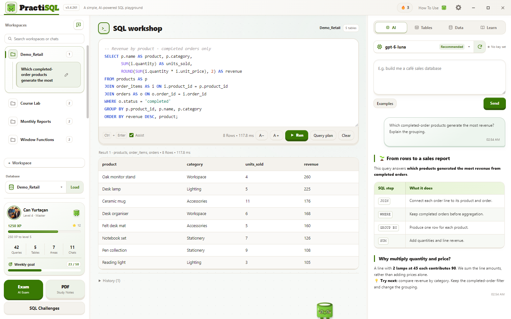
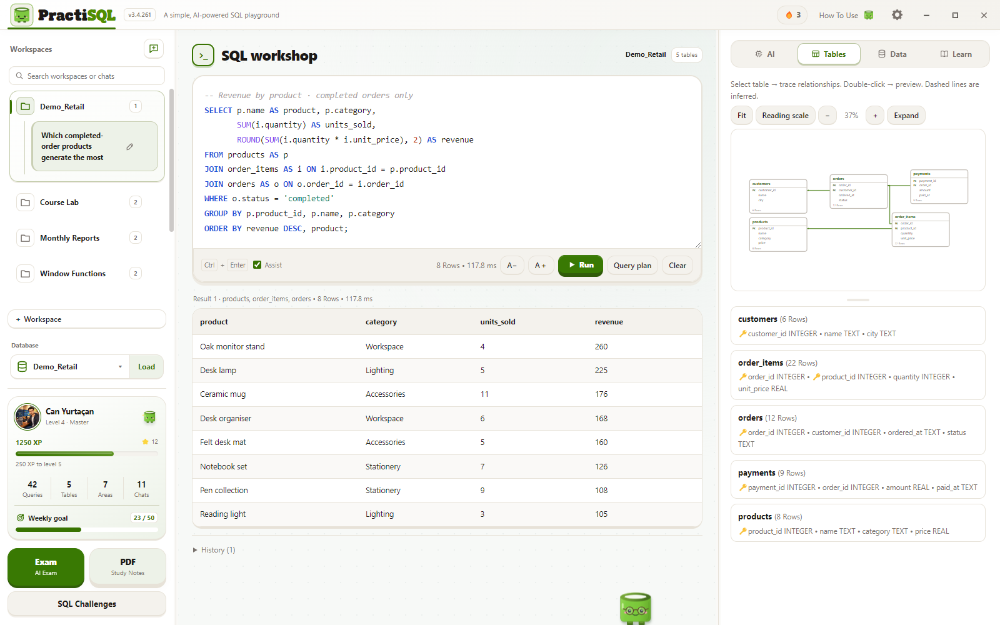
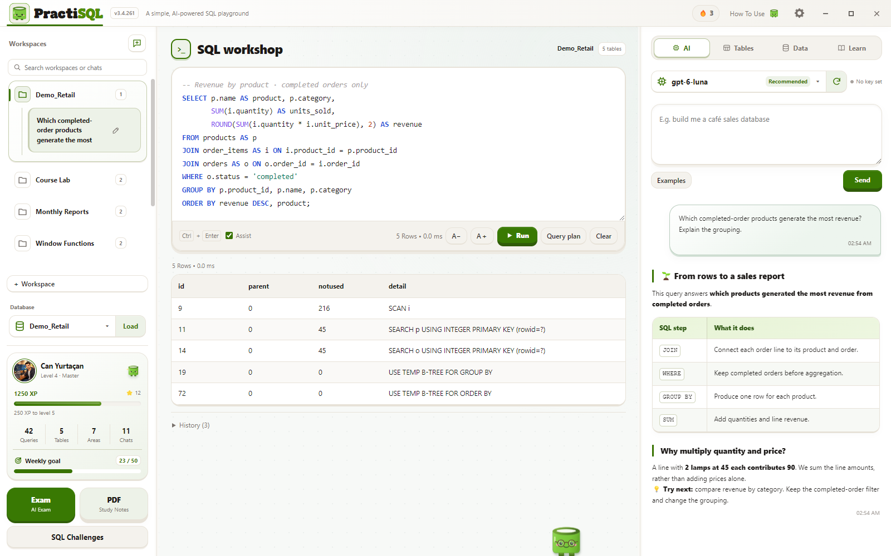
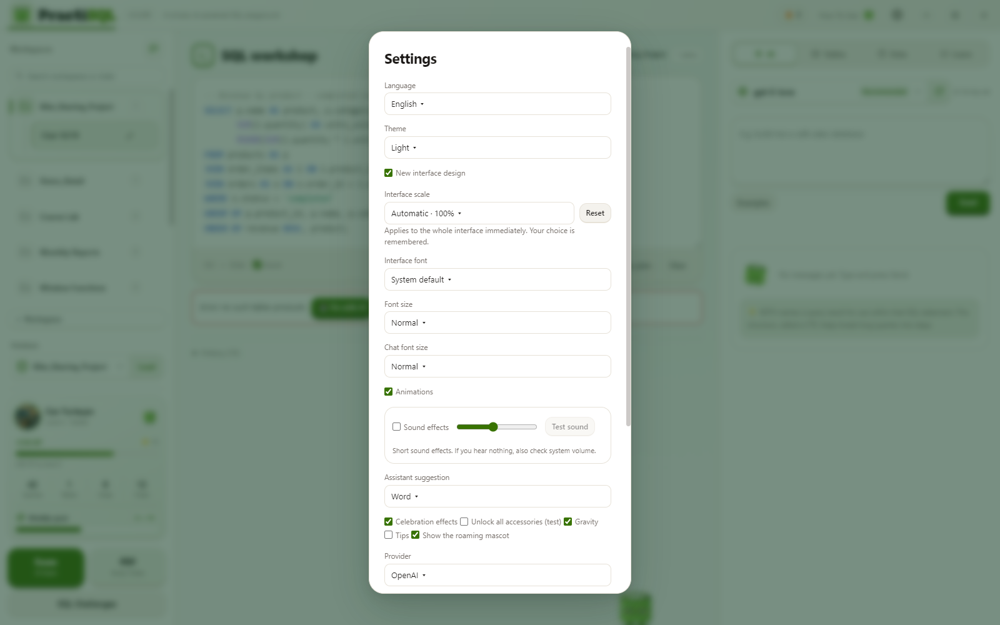
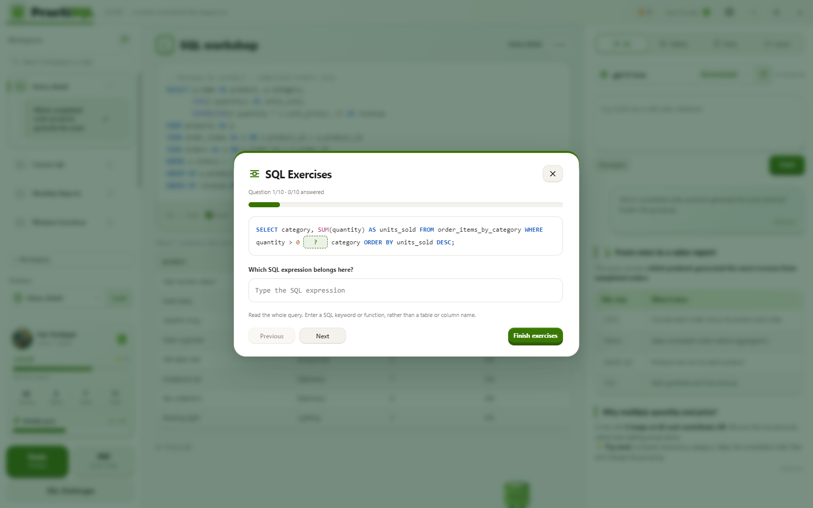
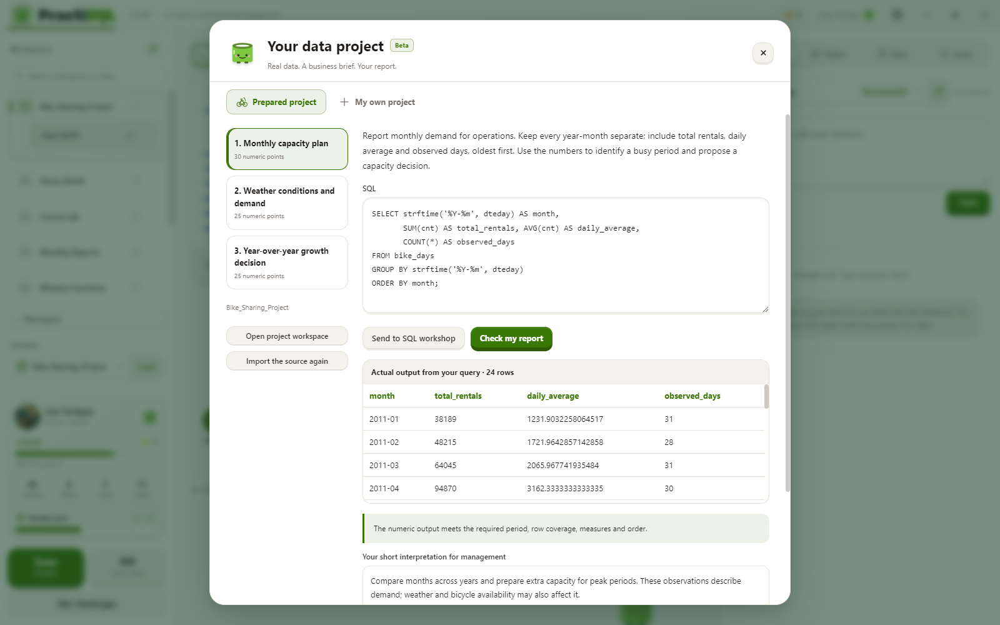
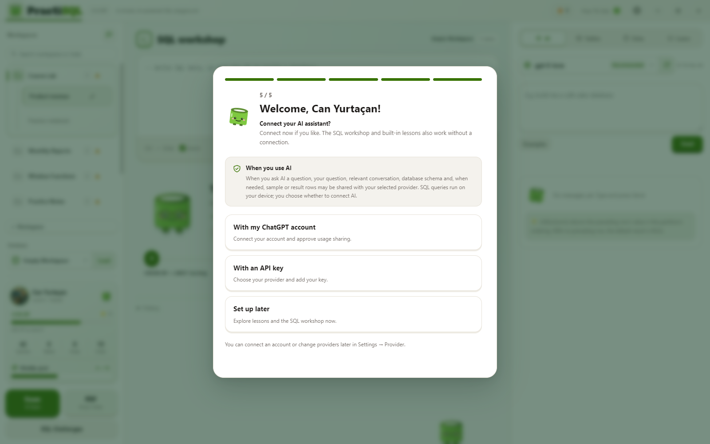

Source code
![]() PractiSQL
PractiSQLLocal SQL · AI tutor · Actual resultsFrom a question to SQL.
From a question to SQL.
From SQL to learning.
The model interprets intent. The application supplies scoped context, runs eligible SQL in local SQLite and brings actual results back into the conversation. Choose a workflow and component below to explore its responsibilities.
01 / 08
Main flow
The model selects the SQL approach and teaching explanation. The application harness prepares context, applies eligible output, checks specific violations and carries actual results into the next turn.

02 / 08
Context
The current request, history and database evidence are labelled separately. The schema is not a copy of every row; missing record information can be retrieved with a tool.
Source code

03 / 08
Tools
These are the two read-only tools in normal SQL chat. Final SQL follows a separate execution path. Data-project discovery and review tools appear in the project view.
Source code
04 / 08
Checks
Successful execution does not prove that the business request or explanation is entirely correct. Specific violations are checked; not every semantic or teaching error can be detected.
Source code

05 / 08
Runtime
The Electron renderer orchestrates the UI flow. A preload/IPC bridge separates local services, workers, account transport and file access.
Source code

06 / 08
Learning workflows
The editor, chat, exams, projects and lesson PDFs have separate contracts. Lesson PDFs use their own local fixtures, rather than reading a personal workspace.
Source code

07 / 08
Data projects
An optional, separate workflow. Source, SQL and numeric checks provide different evidence from AI judgments about business meaning. Numeric success does not prove a flawless interpretation or assignment.
Source code

08 / 08
Privacy and releases
Local execution, provider sharing, credential protection and release identity have distinct responsibilities and limits.
Source code

This map explains component responsibilities. Successful SQL execution alone does not prove that every user intention or AI explanation is correct. Signing infrastructure is prepared; the current local installer is unsigned.